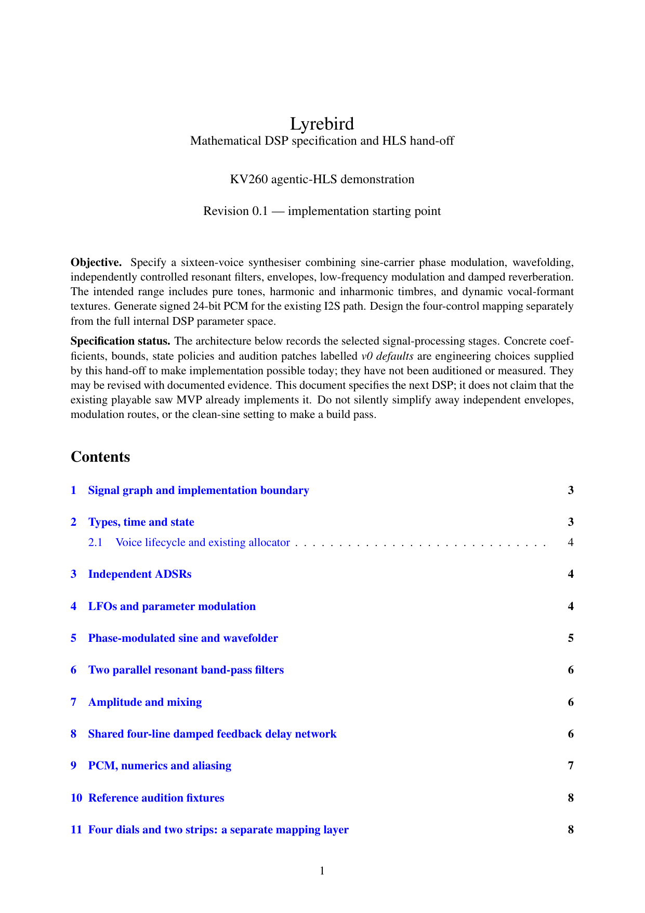
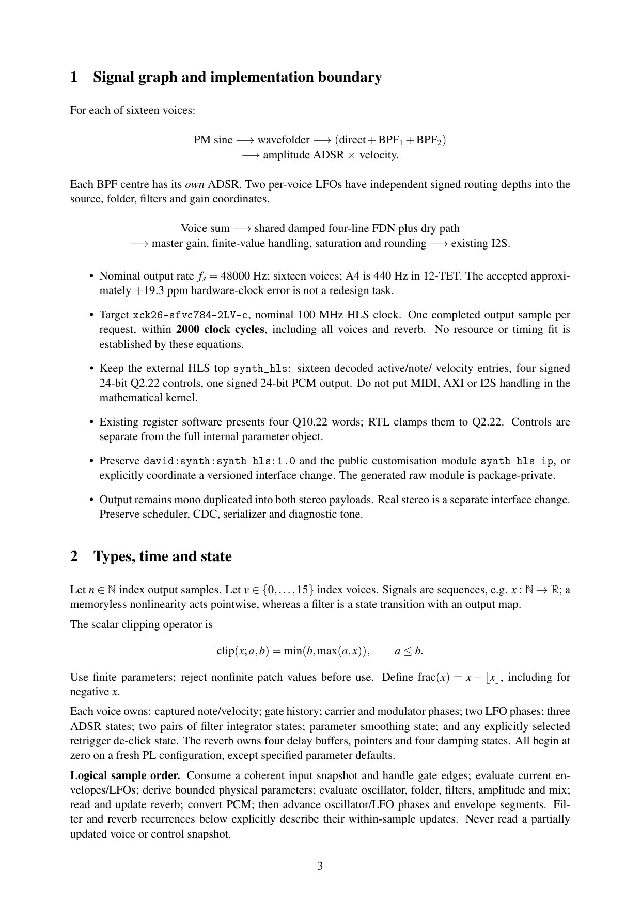

What must exist?
State the product, interfaces, constraints and acceptance criteria clearly enough to act.
Idea to Hardware in Days, Not Months
A wire through a core meant one thing. Around it meant another.
Assembly made the machine legible without making it disappear.
Compilers took responsibility for translating structures, expressions and control flow into machine work.
for (int voice = 0; voice < 16; ++voice) { sample += render( state[voice], controls ); }
State the product, interfaces, constraints and acceptance criteria clearly enough to act.
Agents traverse disciplines, create implementation and operate specialist tools.
Tests, reports and physical behaviour constrain confidence at every step.
Here is how you can do it too.
Sixteen voices. MIDI input. Expressive DSP. Linux control. FPGA audio. Persistent boot. Physical acceptance.
The agent keeps continuity while specialist tools keep it honest.
Inspect project state, execute Tcl, monitor runs, read reports and diagnose errors directly.
Bring optimization method, implementation patterns and evidence-driven iteration into the agent loop.
Preserve decisions while simulation, timing, readback and listening constrain every claim.
For me, equations and explicit state made the DSP precise.
Use existing algorithms, plots and numeric experiments.
Reference models and tests can define expected behaviour.
Requirements, tradeoffs and acceptance criteria still count.
HLS changes the unit of hardware design without making clocks, throughput, latency or resources disappear.
input 16 voices + controls output signed 24-bit PCM rate 48,000 samples / sec budget < 2,000 cycles / sample // freedom inside a hard boundary

Signal graph, equations, state, bounds, interfaces, audition fixtures and acceptance tests.

At 100 MHz and 48 kHz, latency was available. Clock period was not.
An impressive optimization of the wrong axis.
Very few cycles to produce a sample.
A critical path that could not meet the 10 ns clock.
“We have up to 2,000 cycles between samples. Stop optimizing cycle count. We absolutely must reach timing closure.”
The agent used AMD HLS optimization guidance to reshape the operation graph instead of merely compressing the schedule.
cycles · 13.301 ns estimated clock
cycles · 7.230 ns estimated clock
Sixteen rich voices, resonant filters, modulation and reverb, with timing closure.
ALSA receives MIDI. C allocates voices, translates controls and writes only changed state over AXI4-Lite.
RTL adopts a coherent snapshot, schedules HLS once per sample and transfers stable PCM into the I2S clock domain.
Chooses the product, architecture, tradeoffs, safety boundaries and acceptance criteria.
Explore, implement, operate tools, diagnose failures and preserve continuity across disciplines.
Tests, reports, timing, CDC, readback and physical use determine what can actually be claimed.
And it responds like an instrument.
But the scarce skill is moving from typing implementation to directing a verified engineering process.
Specify boldly. Delegate deliberately. Verify relentlessly.